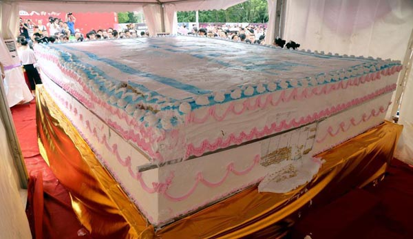
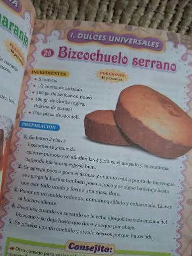

El hito de 1995
Recordamos nuestra participación en la creación de la torta más grande del mundo y lo que significó para nuestra historia.
Leer másNoticias, recetas e historia

Recordamos nuestra participación en la creación de la torta más grande del mundo y lo que significó para nuestra historia.
Leer más
Ideas sencillas para personalizar una torta y hacer que una celebración sea aún más especial.
Leer más